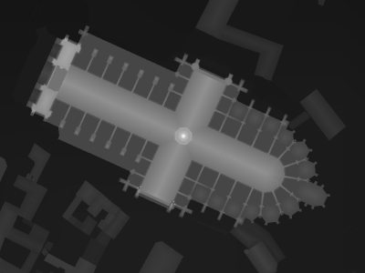
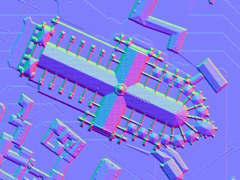
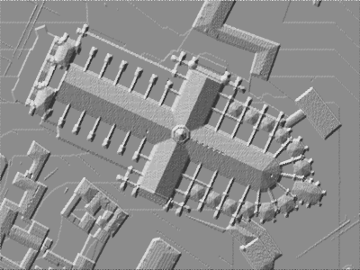
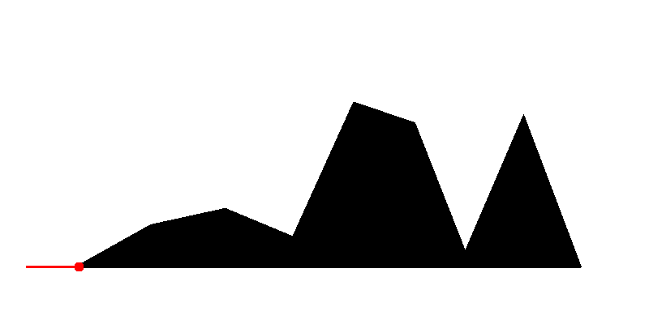
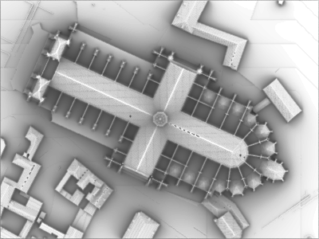
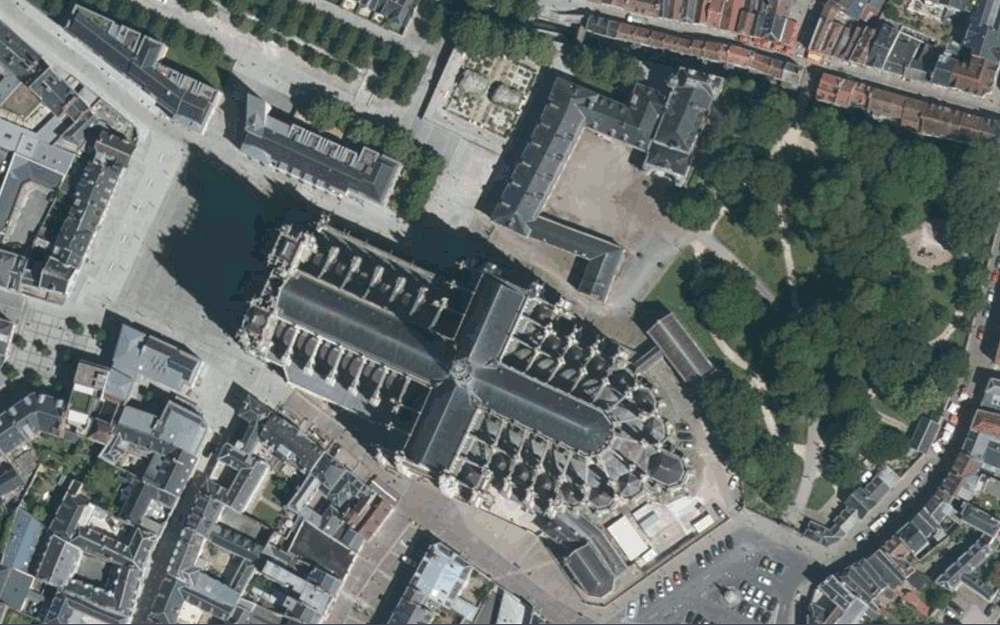

Mais avant de parler d'ortho-image, commençons par :
Comment éclairer un modèle de surface ?
Estompage (pas d'ombres portées) :
Comment obtenir les ombres portée ?
Rééclairement homogène (ciel sans soleil) :
Rééclairement avec un soleil : à compléter par une illustration
Peut-on déduire la position du soleil à partir d'une ortho-image ↓

à partir des méthodes de rendu vu ci-dessus? (et avec quelle précision ?)